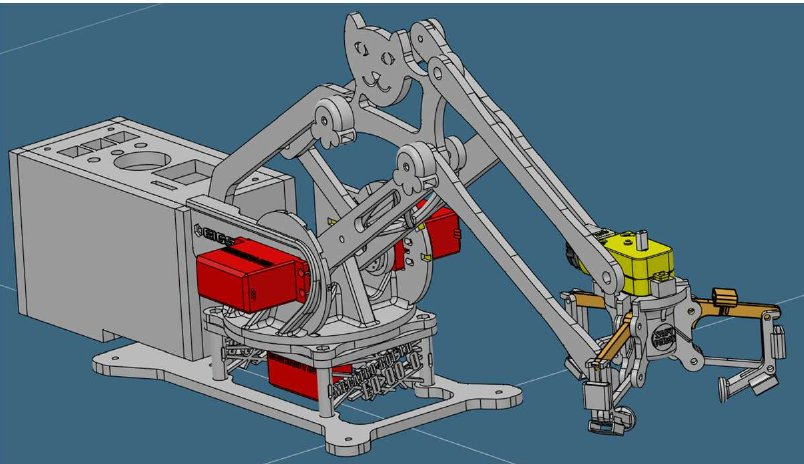
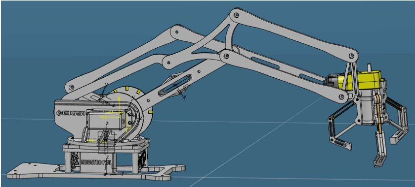
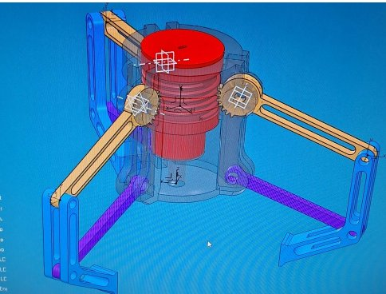
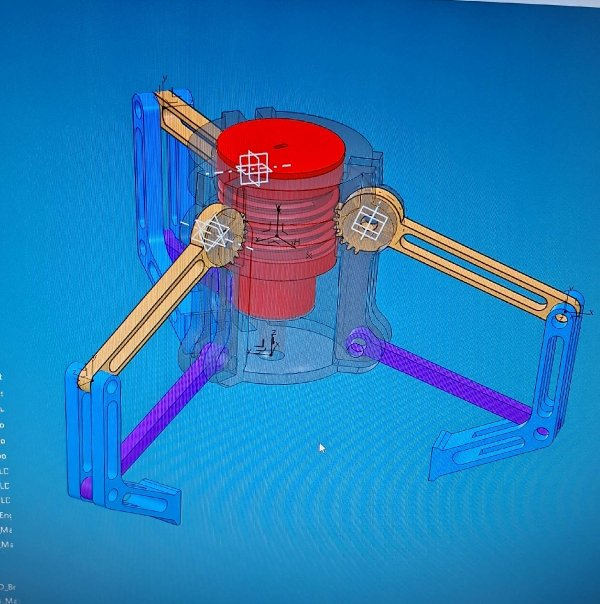
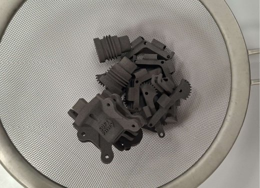
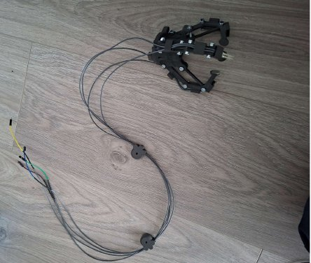
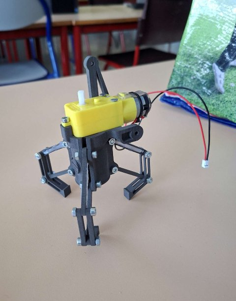
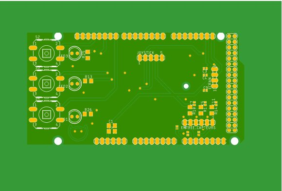
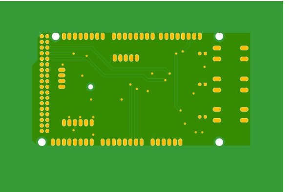

01Contexte
Le projet était un jeu de rôle : un enseignant jouait le client et exprimait un besoin qui évoluait en cours de route. Un obstacle a par exemple été ajouté sur la trajectoire en milieu de projet, ce qui a obligé à adapter la conception et le code. Nous avons travaillé en sprints, avec des macro-tâches découpées en micro-tâches.
L'équipe : deux personnes en mécanique (dont moi), une au code et une à la gestion de projet.
02Mon rôle
- Toute la conception 3D sous 3DEXPERIENCE : bras articulé, mécanisme de préhension, boîtier électronique (environ 50 pièces).
- Fabrication et assemblage : préparation pour l'impression SLS, dépoudrage, contrôle, montage et câblage.
- Cartes électroniques sous EAGLE, conçues en binôme : la carte IHM et la carte de puissance.
03Conception 3D
La pince, que nous avons baptisée SoftPaws, est actionnée par une vis centrale et des engrenages qui ferment les bras de préhension. Une jauge de contrainte mesure l'effort de serrage : ce retour d'effort permet de doser le serrage, d'où le « Soft » de SoftPaws. Chaque pièce a été dessinée en tenant compte des contraintes de l'impression SLS : épaisseurs minimales, jeux de fonctionnement, pas de supports.




04Fabrication
Toutes les pièces mécaniques ont été imprimées par frittage laser (SLS) en nylon. Ce procédé produit des géométries complexes sans supports et des pièces fonctionnelles qui s'assemblent directement.



05Électronique
Carte IHM : un shield pour Arduino Mega 2560, qui s'enfiche sur les autres cartes. Elle porte trois boutons poussoirs avec LED d'état, un joystick deux axes, un écran I²C et un connecteur pour la jauge de contrainte du retour d'effort.
Carte de puissance : un microcontrôleur AVR128DB48, un pont en H VNH7070 pour le moteur et une EEPROM.


06Résultats
- La démonstration finale au client a validé tous les besoins, y compris ceux ajoutés en cours de projet.
- Notre groupe a obtenu la meilleure note de la promotion.
- Une vidéo de présentation a été réalisée (voir plus haut).